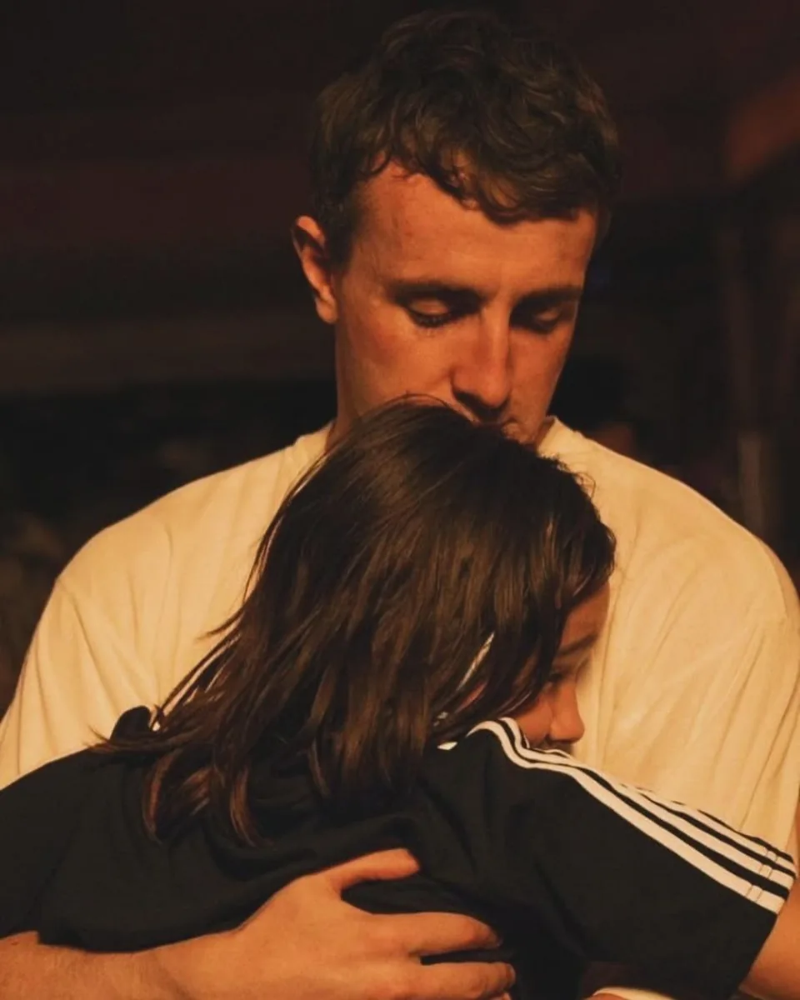
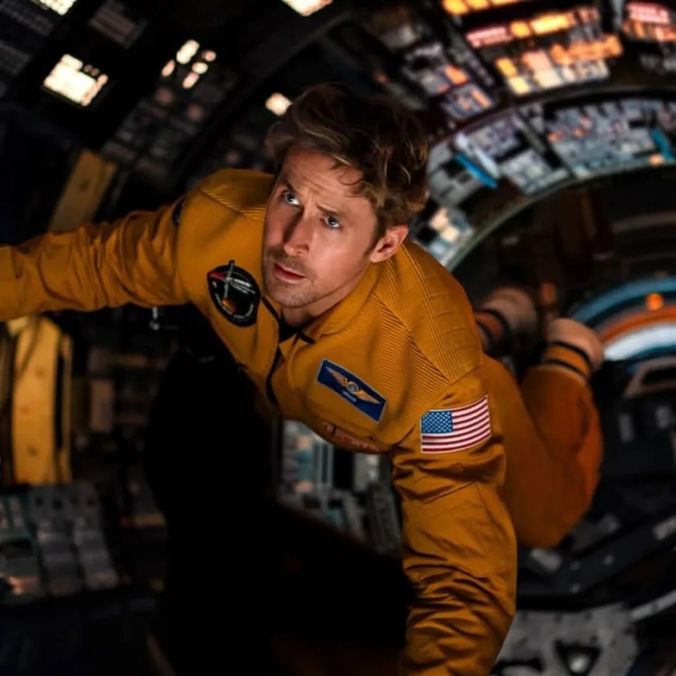
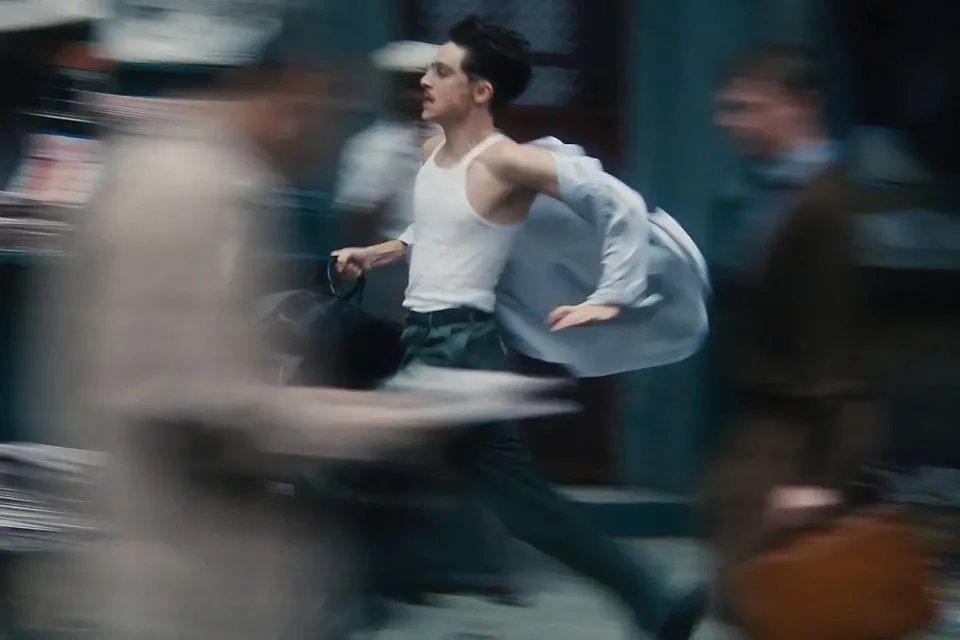
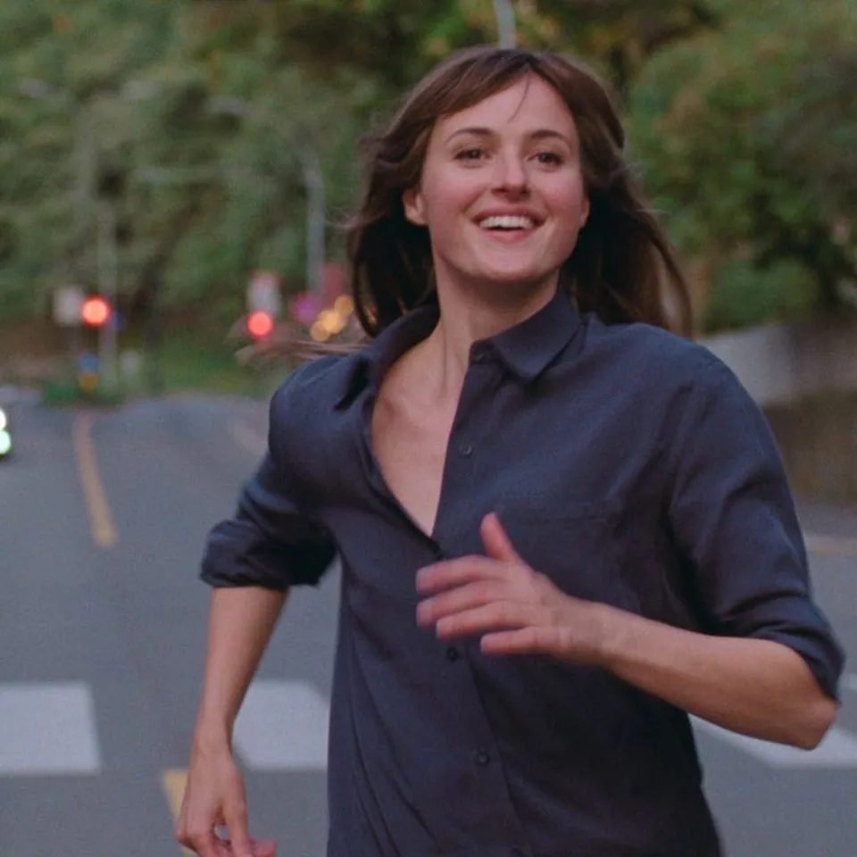
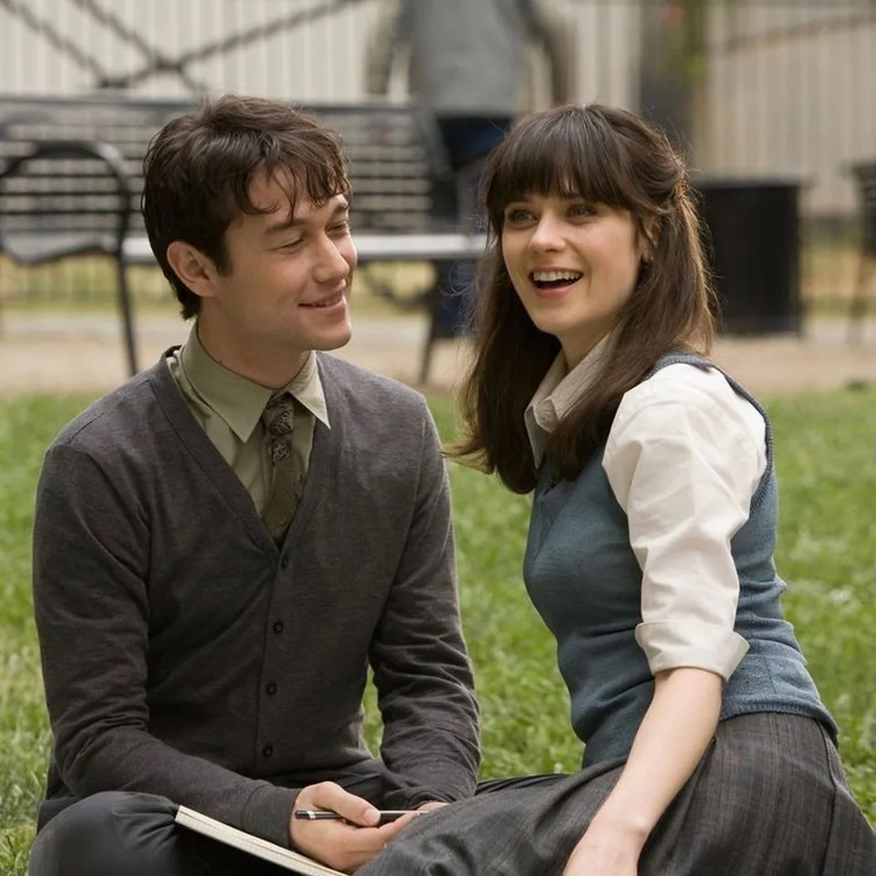

Story Development
We shape your idea into a script, treatment, and pitch ready for financing.
Explore →
Our Services
We shape your idea into a script, treatment, and pitch ready for financing.
Explore →
We plan casting, locations, budget, and schedule so every shooting day runs on time.
Explore →
Our crew captures your story with intentional direction, cinematography, lighting, and clean sound.
Explore →
We cut, grade, and mix the footage into a finished film with its own score.
Explore →
We add subtle VFX and cleanup that support the story without drawing attention.
Explore →
We master, subtitle, and package your film for festivals, cinemas, and streaming.
Explore →
Selected Work

2022 · Cinematography & Color Grading
2023 · Direction & Editing

2026 · VFX & Sound Design

2025 · Production & Casting

2021 · Screenwriting & Editing

2009 · Music & Sound Design
2024 · Cinematography & Post-Production
2025 · Direction & Production Design
Lumina Films - 2026.
About
Lumina Films is a film production studio. We are directors, cinematographers, editors, and producers who believe the best stories are shaped after dark.
From the first spark of an idea to the final festival cut, we handle every frame with intention. No templates. No shortcuts. Just films that make people feel something.
Client Words
"Lumina Films didn't just shoot our film — they shaped the soul of it. Frame by frame."
"The attention to detail is unreal. Every cut, every grade, every beat of silence."
"They understood the story better than we did. The result was pure cinema."
"Working with Lumina Films felt like handing your dream to someone who actually cares."
"Their color grading gave our short a soul I didn't know was there."
"Every frame is intentional. You can feel the obsession in the work."
Get in Touch